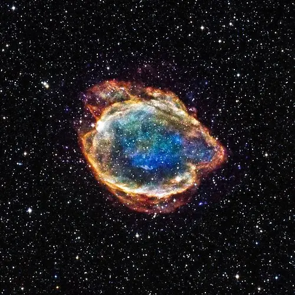
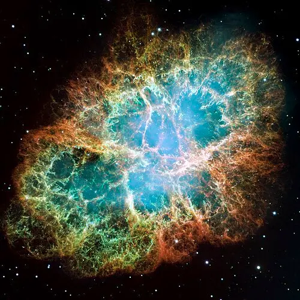

Type-I Supernova
G299

There are two main types of supernovae: |
|
Type-I |
Type-II |
Type I-a:This is the thermonuclear explosion of a white dwarf star. In a binary star system (two stars orbiting one another) a white dwarf star can pull matter from its companion. Once it reaches about 1.4 solar masses runaway nuclear fusion detonates the star completely, leaving no remaining star in its place. |
Type II:This is when the core collapses at the end of the life of a massive star (about 8-50 times the mass of our sun). When the star runs out of Hydrogen to fuse, it starts to fuse Helium, then Carbon, Neon, and Oxygen. This causes a runaway effect until the star eventually fuses Silicon to Iron. When the star begins to fuse elements into an Iron core, the fusion process stops because fusing Iron requires more energy than it releases. At this moment the fusion stops and the and so does its outward pressure. Gravity takes hold and crushes the core causing a bounce and explosion in the fraction of a second. At the moment of the explosion, the extreme heat and shockwave triggers a flood of free neutrons. The Iron rapidly captures these neutrons and forms heavier elements like gold, silver, platinum and uranium and they are blasted out into the galaxy. The only thing left behind is a super dense remnant of the star in the form of a neutron star or a black hole. |
Type I-b and I-c:Core Collapse of a massive star. These are called “stripped” supernovae because the star loses its outer hydrogen(I-b) or helium(I-c) before exploding. This can happen if the companion star is close enough to strip the elements gravitationally or if the stellar winds are high enough. |
|
|
The Differences Between Type-I and Type-II Supernovae |
|
Type-II Supernova
Crab Nebula
